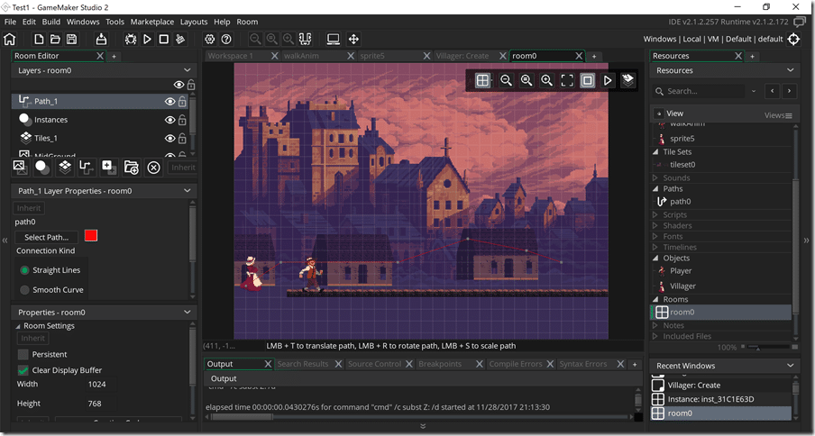

Jogos desde os 10 anos, back-end, um sistema desktop em Delphi em produção, Rust e
Go no caminho — e a Mosaic: um desktop, uma loja e uma biblioteca de interface
para Linux, todos com a cara do seu wallpaper.
jogos na godotback-enddelphi · pascalrust (aprendendo)go (o próximo)interfacesc++ competitivodireção de artejogos na godotback-enddelphi · pascalrust (aprendendo)go (o próximo)interfacesc++ competitivodireção de arte
(01) sobre ✦cat sobre.md
Quem sou
Eu sou o Italo. Faço jogos desde os 10 anos,
escrevo back-end, coloco sistema
desktop em produção e desenho
interfaces que mudam de cor com o wallpaper.
Aprendo do jeito mais lento e mais certo: refazendo até entender.
Em 2019 fiz o Zé Gotinha no GameMaker. Era ruim do jeito que tinha que ser. Anos depois refiz o mesmo jogo na Godot só pra medir o quanto eu tinha mudado.
Competitiva em C++ me ensinou a perguntar quanto custa antes de perguntar se funciona. A robótica na FTC me ensinou a resolver com o relógio correndo. O Delphi me ensinou que software de verdade tem usuário, permissão e log.
E a Mosaic me ensinou direção de arte: a paleta, os layouts, as regras de movimento e o nome são meus.
base
MG, Brasil
sistema
CachyOS + Mosaic OS
editor
Neovim
engine
Godot
agora
Rust · Go · Delphi
não
Windows nunca mais
0anos programando
00repositórios públicos
0peças da Mosaic
0000Linux virou casa
(02) sei fazer ✦italo --help
O que eu sei fazer
Tudo num lugar só: cada área, o que eu entrego nela, as ferramentas — e os projetos que provam.
01
Back-end & APIs
APIs REST organizadas em camadas — controller, service, repository, model —, autenticação por token, validação e integração com banco.
De um jogo no GameMaker a um ecossistema inteiro, em 13 commits. Use as setas, arraste para o lado ou clique num ponto da linha.
2019
init commit 1/13
primeiro contato
5º ano, GameMaker Studio 2.
~/trajetoria/2019.webp

programando tudo num pc velho da minha vó
(04) mosaic ✦paru -S mosaic
Mosaic
Um ecossistema com a cara do seu wallpaper.
O Matugen tira uma paleta do wallpaper e tudo se pinta com ela: o desktop, a loja, o ícone do app. As regras são poucas e rígidas — calma, rápida, legível. Blocos chapados, sombra de objeto, nada passa de 420 ms, nada quica.
Uma pílula no topo da tela que se transforma com física de mola: painel rápido com clima, música e atalhos, bússola das áreas de trabalho (segure Super), volume, prints — e cada commit e push aparecendo nela, por um hook global do git.
QML
molas
git hooks
02 / 07 menu iniciar
Um lançador que sai da ilha
Menu iniciar e notas rápidas num cartão fundido à ilha. Modos no próprio campo de busca: # área de transferência, > ações, @ janelas abertas, timers e contas.
launcher
Quickshell
03 / 07 temas
Tema muda cor e forma
Mosaic, Gruvbox, Horizonte e macOS. Cada tema pinta o shell, as bordas do Hyprland, o kitty, o Neovim, a Mosaic Store e o navegador — e redesenha os widgets do desktop do seu jeito.
Matugen
Hyprland
4 temas
04 / 07 wallpaper
O wallpaper chega numa onda de pixels
No tema Mosaic, o wallpaper novo entra na mesma onda da mosaic-ui — e os widgets do desktop pegam carona nela em vez de sumir. As cores do sistema inteiro saem dele.
mosaic-ui
Matugen
05 / 07 laterais
Laterais que fazem de tudo
À direita: toggles, sliders, bateria do celular pelo KDE Connect, calendário e notificações. À esquerda: tradutor, tarefas e um chat de IA.
KDE Connect
notificações
06 / 07 bloqueio
Bloqueia com a cara do tema
No macOS, a data sobre um relógio enorme e a senha numa pílula que treme quando erra. Nos outros, um relógio em duas linhas, o que está tocando e a letra.
lock screen
impasto
07 / 07 em movimento
Leve com a GPU
Nada anima sozinho quando você não está olhando. Tem até um painel (SuperAltG) que desliga partes do shell pra achar o que pesa na placa de vídeo.
desempenho
tela cheia
01a ilha aberta, no tema Mosaic
02
Mosaic Store
Uma loja de pacotes para o Arch Linux. Coloca o paru atrás de uma interface calma: busca, AUR, PKGBUILD, instalação e o build ao vivo, sem abrir terminal.
A identidade saiu da loja e virou biblioteca. Sem build, sem dependência, sem framework — e os quatro pilares abaixo estão funcionando de verdade. Mexe neles.
i.
Teclas que afundam
no clique e no teclado — aperte A S D
ii.
Blocos chapados
cor sólida, quinas retas — passe o mouse
iii.
Campo de pixels
três ondas, uma por cor, e uma lente
iv.
Onda de pixels
a tela nova nasce do clique — clique
<!-- uma tecla que afunda, com atalho de verdade --><buttonclass="mo-tecla mo-tecla--destaque"data-mo-atalho="enter">Instalar</button><!-- o campo de pontos com a lente --><mo-pixelspasso="15"lente="150"></mo-pixels>// a onda, a partir do cliqueawait revelar(painel, { x, y, trocar });
Sobre o uso de IA: a direção de arte, as paletas, os layouts, as animações e o nome da Mosaic são meus — cada tela começou como esboço meu. Boa parte do código de front-end e do QML foi escrita com a ajuda de IA, e eu conto isso em cada README.
(05) agora ✦paru -S italo-2026
Agora compilando
Como a fila da Mosaic Store: o que já está instalado, o que está compilando e o que está na fila. É o que estou entregando e aprendendo agora.